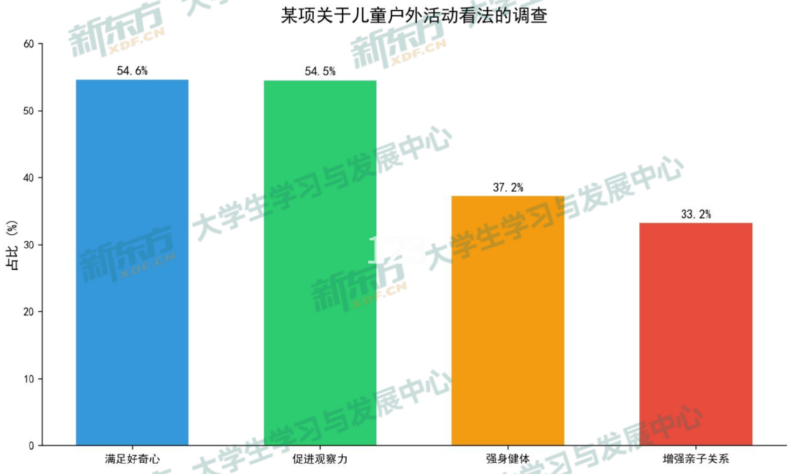

Section I Use of English
Directions:Read the following text. Choose the best word(s) for each numbered blank and mark A, B, C or D on the ANSWER SHEET. (10 points)
Most of us strive for self-respect — to see ourselves in a positive light, to be 1 of who we are. Any comments or experiences that undermine those feelings of self-worth can be uncomfortable and it’s only 2 to want to avoid them. But the thing is, 3 your self-worth really is being undermined is, to a large degree, subjective. Most of it comes down to your 4 of what someone said or did.
When you take things personally, you’re interpreting these situations as saying something significant and negative about you as a person. Say your boss picks holes in your sales report, and you come away feeling like this means she thinks you’re a 5 member of staff. Or, two of your friends cancel your 6 get-together at the pub and you interpret this as meaning they’re bored of you. Psychologists have a 7 for this way of thinking: personalisation.
But the 8 is that your boss might view you very highly. It’s just you made some 9 in the report and she wanted to point these out so that you do better next time. 10, in the case of your friends cancelling, perhaps they both felt unwell that weekend or they just 11 their minds.
In both 12 and others that we all experience — there is another 13 at work that psychologists call mind reading. This is when you assume to know what other people are thinking about you, when you can’t really know without 14 them directly.
One simple way to avoid 15 personalization and mind reading is to challenge your negative assumptions of what’s 16. When you find yourself taking a situation personally, try to think of other interpretations that are less focused on you, especially in the sense of saying anything deep or 17 about you. When you do this, it might help to try to put yourself in others’ shoes. The fact your boss took time to give you 18 at all means they care enough to want to help you 19. When it comes to your friends, maybe because your friendship is so 20 that they feel able to cancel at late notice.
1.[A] afraid[B] critical[C] proud[D] tolerant
2.[A] risky[B] natural[C] admirable[D] foolish
3.[A] whether[B] when[C] why[D] how
4.[A] citation[B] imitation[C] perception[D] introduction
5.[A] poor[B] loyal[C] creative[D] shy
6.[A] sponsored[B] crowded[C] disputed[D] planned
7.[A] method[B] term[C] design[D] goal
8.[A] evidence[B] theory[C] condition[D] reality
9.[A] complaints[B] choices[C] mistakes[D] suggestions
10.[A] Similarly[B] Relatively[C] Accordingly[D] Contrarily
11.[A] opened[B] changed[C] trained[D] cleared
12.[A] quotations[B] experiments[C] questions[D] examples
13.[A] process[B] objective[C] outcome[D] background
14.[A] blaming[B] warning[C] teaching[D] asking
15.[A] arguing about[B] accounting for[C] engaging in[D] interfering with
16.[A] happened[B] continued[C] returned[D] disappeared
17.[A] casual[B] obvious[C] familiar[D] fundamental
18.[A] reward[B] feedback[C] trust[D] proof
19.[A] innovate[B] concentrate[C] improve[D] relax
20.[A] strange[B] strong[C] vulnerable[D] valuable
Section II Reading Comprehension
Part A
Directions:Read the following four texts. Answer the questions below each text by choosing A, B, C or D. Mark your answers on the ANSWER SHEET. (40 points)
Text 1
Ask people about public libraries and a certain image springs to mind: dusty, old-fashioned, the sort of place you enjoyed as a child but, rather like a British seaside town, would you go there now? And anyway — aren’t they all closing?
The reality is startlingly different, as I discovered when the culture department commissioned me to conduct an independent review of English public libraries, published yesterday. Over nine months, as I visited libraries up and down the country, I was surprised to learn there are more than twice the number of libraries (2,892) as there are branches of McDonald’s.
Enter any one of them and you will find a hive of activity. While books are, and should always be, at the heart of any library, a multitude of other services are offered: employment advice, language classes or digital access and support.
There are libraries with business and intellectual property (IP) centres, which can help business owners and entrepreneurs. Many have nurses on site to carry out basic health checks, with a link to the GP’s surgery. There are social groups to tackle the stigma of men’s mental health, code clubs for children and libraries where young people can borrow a Fifa-standard football free.
In return for all of this, you’ll be asked for precisely nothing. There will be no charge and you will never be asked to justify or explain yourself; you will simply be welcomed in, offered help if you need it and left alone if you do not. There is no other institution, public or private, that can say the same. Yet still our libraries are often overlooked and underappreciated. There is an overall decline in visits and many are struggling as local authorities come under continued financial pressure.
The number of libraries that have closed since 2010 is disputed. An annual survey by the Chartered Institute of Public Finance and Accountancy (Cipfa) puts it at nearly 800 across the UK; official statistics held by the Arts Council record 230 in England. It is, of course, 230 libraries too many. So if we are to protect our libraries for future generations, we must raise awareness of them and the work they do.
The review recommends a national branding campaign to give libraries a stronger physical presence, the reintroduction of a scheme to enable members to use their card in any library in the country, and automatic memberships for children. If we don’t use them, we will end up losing them. And for those who haven’t been to a library for some time, they may be surprised by what they find.
21. What was the author commissioned to do about English public libraries?
[A] Document their valuable traditions.
[B] Make a plan for their expansions.
[C] Obtain reader opinions on them.
[D] Look into their current situation.
22. According to paragraph 3&4, the author finds that libraries ______.
[A] boast desirable book collections
[B] keep detailed visitor records
[C] perform diversified functions
[D] attract mostly young readers
23. It is implied in paragraph 5 that libraries should ______.
[A] be given greater attention
[B] impose stricter visit limits
[C] work with private institutions
[D] get their equipment upgraded
24. The statistics mentioned in paragraph 6 show ______.
[A] the crisis faced by libraries
[B] the advancement of libraries
[C] the contributions of libraries
[D] the flaws existing in libraries
25. Which of the following is suggested for the libraries in the last paragraph?
[A] Inviting public feedback.
[B] Seeking adequate funding.
[C] Improving user convenience.
[D] Offering lifetime membership.
Text 2
According to our research, around one in five workers in the UK talk to AI like a friend, looking for guidance on personal and professional problems. Our data shows that engaging with AI like this can leave us feeling heard and less isolated. But, with this newfound connection, many of us share sensitive, sometimes highly confidential information, even though over a third of people don’t realise that AI platforms may not be very good at keeping our secrets ... secret.
For businesses, the implications are worrying. Consider Microsoft Copilot for example. It grants Microsoft broad rights to the data inputted or outputted by any user — rights to use this data in any way it sees fit, it can even share it with third parties. This means that any sensitive information could potentially be exposed to the world. Employers are taking note and taking action. According to our research, 25% have decided to either outright ban AI or regulate its use within their organisations.
But even with these policies in place, some employees choose to break the rules. They have their reasons — around 63% of them report that using AI increases their productivity, and some even feel AI offers more help than their human colleagues.
The situation presents a delicate balance between leveraging AI for its productivity gains and risking confidential data exposure. Employers need to manage AI tools with the same level of care as any other form of data sharing or storage. There’s also a knowledge gap that needs to be addressed — 40% of individuals surveyed are unsure about who retains ownership over the content produced by AI.
By instilling best practices in AI engagement and creating policies that evolve with the technology, businesses can positively shift the AI landscape.
With AI’s potential to simplify our professional lives, do the admin and enhance the work experience, it’s up to us to navigate its usage cautiously so it supports us without compromising our privacy. There’s no need to back away from progress, as long as we’re equipped with the knowledge and tools to make sure AI remains a friend. And this is where the challenge lies. There are so many products out there, being promoted with huge advertising and marketing budgets, that it’s easy to fall victim.
But by building a culture of digital responsibility within our businesses, we can create a future where AI can help us without spilling the beans.
26. According to Paragraph 1, workers’ engagement with AI can ______.
[A] facilitate their career progress
[B] give them emotional support
[C] help maintain their motivation
[D] improve workplace communication
27. Microsoft Copilot is cited to show that the use of AI may ______.
[A] pose a threat to businesses
[B] generate unnecessary data
[C] promote business cooperation
[D] encourage information sharing
28. Some employees choose to break the rules on AI due to ______.
[A] easy access to AI products
[B] the desire to stay well-informed
[C] its significant role in their work
[D] the need to compete with others
29. To positively shift the AI landscape, businesses should ______.
[A] increase the transparency of their data sources
[B] prioritise the quality of AI-produced content
[C] include employee perspectives in their rules
[D] adjust their management to AI development
30. According to the last paragraph, we may easily fall victim to AI as we ______.
[A] have a limited understanding of it
[B] underestimate its economic costs
[C] tend to overemphasise its power
[D] are excessively exposed to it
Text 3
Since the 2008 launch of the high-speed rail network between Rome and Milan, trains have become the preferred means of travel across Italy for locals and tourists alike. Fast trains can cover the 500km between the two cities in 3 hours. The network also connects Naples, Bologna, Florence and Turin. In many cases, it is the best option — in terms of travel time and cost — for both leisure and business travelers.
This is why the recent severe delays caused by numerous maintenance works have thrown the rail industry into chaos at a time when most people head on holiday, which matters for business in a country where tourism accounts for 10% of GDP.
Disruptions have become increasingly frequent with train delays now a fixture in Italian media coverage. Ferrovie dello Stato Italiane, the publicly controlled group that owns train operator Trenitalia and the national train network RFI, said 23% of all high-speed trains it operated were late in 2023.
The huge improvements in Italy’s obsolete infrastructure partly explained the disruption, said Ferrovie. RFI, the network operator, is the single largest European recovery fund beneficiary with planned investments of €24bn by 2026. Ferrovie will invest a total of €124bn in infrastructure over the next 10 years.
But lack of capacity is another problem. Transport economist Andrea Giuricin said the planned investments would bring improvements but disruptions in the meantime were inevitable. “We have a mixed system, there’s no spare capacity and as soon as there’s a hiccup on the line, the situation becomes highly complex,” he said. A mixed system means that high-speed trains must travel on the regular tracks on certain routes or when passing through large cities. If there’s congestion or, for example, a local train breaks down, the entire high-speed network is affected.
One of the most important changes the upgrades will bring is the segregation of the high-speed line from the regular one in certain urban centres through the construction of underground rail links.
Improvements will also come from the high-density technology and satellite signalling that RFI has been investing in for years, says experts. It will allow for a reduction of the distance between high-speed trains travelling on the same line at any given time, which should mean a significant increase in capacity and traffic fluidity according to Giuricin.
31. According to first two paragraphs, the high-speed rail network in Italy ______.
[A] is seen by tourists as outdated
[B] is a popular option for travelling
[C] is inadequately utilised by locals
[D] is an example of good maintenance
32. Ferrovie is quoted in paragraph 3 to show ______.
[A] the common occurrence of train delays
[B] the value of Italian train network
[C] the wide media coverage of trains
[D] the high efficiency of Trenitalia
33. Which of the following is one cause of the disruptions in the network?
[A] Complex train schedules.
[B] Shortage of investments.
[C] Its limited capacity.
[D] Its massive scale.
34. It can be learned that the mixed system ______.
[A] provides a wide choice of routes
[B] requires extra operational spending
[C] increases the level of travel comfort
[D] puts the high-speed network in trouble
35. Improvements to the Italian train network will include ______.
[A] reconstructing the regular train lines
[B] shortening high-speed train intervals
[C] building more stations in urban centres
[D] enhancing the safety of high-speed trains
Text 4
In 2023, Chicago lost one of its most beloved street festivals. The Silver Room Block Party, staged by Hyde Park community leader Eric Williams, announced it would not return in 2024. What began as a small neighborhood gathering blossomed into a massive cultural event, welcoming tens of thousands of people each year over nearly two decades before abruptly shutting down.
Williams pointed to rising production costs and declining attendee donations as primary reasons the Silver Room Block Party could not continue, highlighting a reality that all street festival organizers face right now. The cost of producing a street festival in Chicago has skyrocketed. Security, entertainment, portable restrooms, insurance and even basics such as fencing and staffing have all become significantly more expensive. At the same time, donations at festival gates have dropped dramatically.
Chicago’s summer festivals are about more than just entertainment; they are economic engines that directly benefit the neighborhoods they’re in and the city of Chicago as whole. Street festivals drive foot traffic to local businesses and foster the kind of cultural vibrancy that makes our city special.
We often hear people ask why we solicit donations at our entry points, especially when the city’s largest festivals like the Chicago Jazz Festival do not request donations. The fact is, unlike those large, city-produced music festivals, your neighborhood street festivals receive no city funding and rely on a combination of sponsorships, vendor fees and gate donations to cover their costs.
Wicker Park Fest has long been one of Chicago’s most anticipated summer festivals, drawing upward of 70,000 attendees for a full weekend of live indie music, local art, small business vendors and, most importantly, community connection. In 2024, Wicker Park Fest saw record-breaking attendance. Despite the turnout, gate donations reached their lowest point in our history. This year, we’ve been forced to scale back the footprint of the fest. We are eliminating a stage, booking fewer performers and making additional cuts to reduce our costs, all while striving to keep the festival as vibrant as ever, as supportive of local artists and businesses, and as true to Wicker Park’s unique spirit and reputation as festgoers have come to expect.
This summer, as you enjoy your favorite neighborhood street festival, I hope you’ll remember that they exist because of community support. A thriving summer festival season doesn’t happen by accident; it happens when we all chip in.
36. It can be learned from Paragraph 1 that Sliver Room Block Party ______.
[A] has been replaced by other festivals
[B] has gained great international fame
[C] was held in various neighborhoods
[D] was an appealing cultural gathering
37. One reality street festival organizers face is that ______.
[A] they are unable to use donations wisely
[B] they are unable to get sufficient facilities
[C] they have to tackle financial difficulties
[D] they have to step up security measures
38. According to Paragraph 3 & 4, Chicago’s street festivals ______.
[A] reflect typical urban lifestyles
[B] are funded by the government
[C] contribute to the local economy
[D] are famous for their music shows
39. It is implied that the organizers of Wicker Park Fest have to ______.
[A] count on amateur artists’ participation
[B] reduce the number of performances
[C] give up its most prominent feature
[D] collaborate with large businesses
40. The author holds that the future of street festival depends on ______.
[A] the variety of activities
[B] the generosity of attendees
[C] the reputation of neighborhoods
[D] the management of expenditures
Part B
Directions:
Read the following text and match each of the numbered items in the left column to its corresponding information in the right column. There are two extra choices in the right column. Mark your answers on the ANSWER SHEET. (10 points)
In an effort to support restoration programmes, specialists are developing supplies of seeds and seedlings, maintaining gene banks and sequencing the genomes of indigenous trees and other crops. Their work deals with one of the problems that could block major restoration efforts in different parts of the world.
“Where’s the planting material going to come from? That’s one big bottleneck,” says genetic-resources specialist Ramni Jamnadass.
Asia is arguably the region most neglected by global efforts to increase diversity in restoration and to study native species. Christopher Kettle, Bioversity International’s director for forest genetic resources and restoration in Rome, says that the need for infrastructure — things such as mechanisms for collecting and storing seeds, and nurseries to raise seedlings — might be most desperate here because many trees are ‘masting’ species, which don’t produce seeds every year. People need to be ready. “Otherwise, you miss the boat, you lose all the seed and you’ve got to wait another seven years,” says Kettle. “This is a really, really critical issue for restoration in Southeast Asia, because many of the most important timber species and tree species — the ones that will lock up the most carbon — they’re all masting species.”
Climate change is a driving factor in the push to restore forests, but it also raises questions, such as where trees can thrive in the future. Climate change is also expected to alter relationships between trees, insects, diseases and other forest species. “Insects that today are a minor problem may become a major problem if they can produce three or four generations in a year,” says forest ecologist John Stanturf. This remains a significant knowledge gap. “We know enough to know that this is a concern, but we don’t know enough about how to respond to it yet. That’s a great area to be doing research.” So is soil, says Cindy Prescott, a forest ecologist at the University of British Columbia in Vancouver. “If you don’t look at the soil at the start, you can spend a lot of money and time putting in species that aren’t going to survive there.”
With so much research left to do, leaders in the field have been doing some soul-searching, and acknowledging that restoration can be motivated by — and designed to meet — different needs. “When you talk about conservation or restoration, the first question has to be restoration by whom, for whom?” says Janzen.
The question can have more than one answer. Much of the global funding for restoration is dedicated to developing it as a tool to mitigate climate change, notes Brancalion. “But if you ask a farmer in Brazil if he or she is concerned about climate change, they would say, ‘No, I am concerned about water,’” he says. Their interests as stewards of the land need to be better integrated with those who have the money to support restoration.
That has been the strongest lesson of all for Chazdon. Restoration is about more than what gets planted in the ground, she says. “Yes, it’s about forests, but it’s really about people. They are the agents of restoration.”
41. Ramni Jamnadass
42. Christopher Kettle
43. John Stanturf
44. Pedro Brancalion
45. Robin Chazdon
[A] People must pay attention to the fact that some kinds of trees do not produce seeds annually.
[B] Soil is an important element to be taken into account in forest restoration.
[C] The purpose of restoration efforts may be different from the real needs of the people involved.
[D] Human factors, as well as trees planted, should be emphasized in forest restoration.
[E] The supply of seeds is a tough problem that has to be dealt with.
[F] When it comes to restoration, we have to start with an awareness of whose interests to serve.
[G] Some creatures in the forest that multiply fast can become a great threat to forest restoration.
Section III Translation
46. Directions:
Translate the following text into Chinese. Write your translation on the ANSWER SHEET. (15 points)
The influence of wearables on psychology refers to how the clothes we wear affect our thoughts, feelings, and behaviors. Clothing is not just about covering our bodies; it plays a significant role in shaping our self perception and interaction with others.
One aspect of this influence is self-expression. The clothes we choose can reflect our personality, mood, and identity. Whether we opt for bold, colorful outfits or prefer more understated styles, our dress choices convey messages about who we are and how we want to be perceived.
Additionally, clothing can impact our confidence level. When we wear clothes that make us feel comfortable and confident, it can positively affect our self-esteem and overall mood.
Moreover, cultural and social influences play a significant role in shaping our dress choices. Different cultures have their norms and expectations regarding dress, which can influence the types of clothing people wear and the meanings attributed to them.
Section IV Writing
Part A
47. Directions:
Suppose your friend Jack has shared with you a video of his family’s travel in China. Write an email to tell him
1) how you feel about the video, and
2) your wish to learn more about their travel.
Write your answer in about 100 words on the ANSWER SHEET. Do not use your own name in your email. Use “Li Ming” instead. (10 points)
Part B
48. Directions:
Write an essay based on the chart below. In your essay, you should
1) describe and interpret the chart, and
2) give your comments.
Write your answer in about 150 words on the ANSWER SHEET. (15 points)
